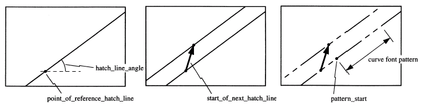

IfcFillAreaStyleHatching
Definition from ISO/CD 10303-46:1992: The fill area style
hatching defines a styled pattern of curves for hatching an annotation fill
area. Illustration from ISO 10303-46, page 109:  NOTE: Corresponding STEP name:
fill_area_style_hatching. Please refer to ISO/IS 10303-46:1994, p. 108 for the
final definition of the formal standard. HISTORY: New entity in Release
IFC2x 2nd Edition.
EXPRESS specification:
|
| HatchLineAppearance | : | The curve style of the hatching lines. Any curve style pattern shall start at the origin of each hatch line. |
| StartOfNextHatchLine | : | A repetition factor that determines the distance between adjacent hatch lines. |
| PointOfReferenceHatchLine | : | A Cartesian point which is the origin for mapping the fill area style hatching onto a curve or annotation fill area. |
| PatternStart | : | A Cartesian point which is the start point for the curve style of the reference hatch line. |
| HatchLineAngle | : | A plane angle measure determining the direction of the parallel hatching lines. |
|